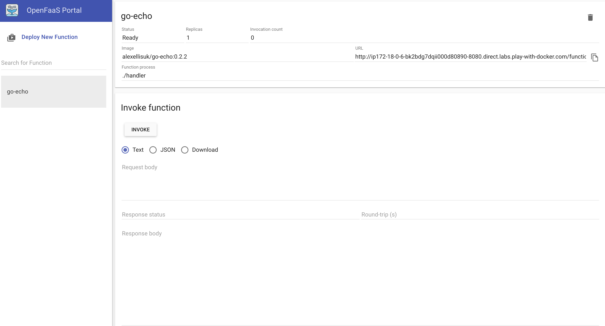
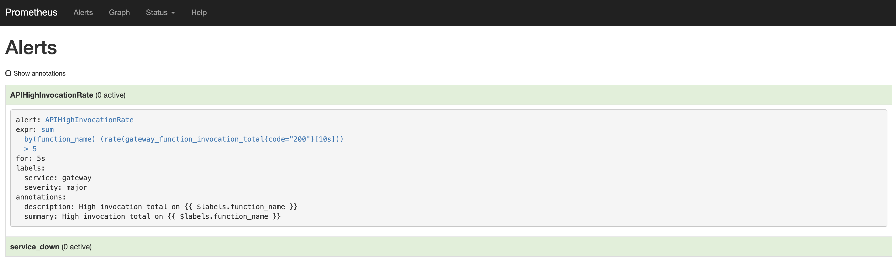
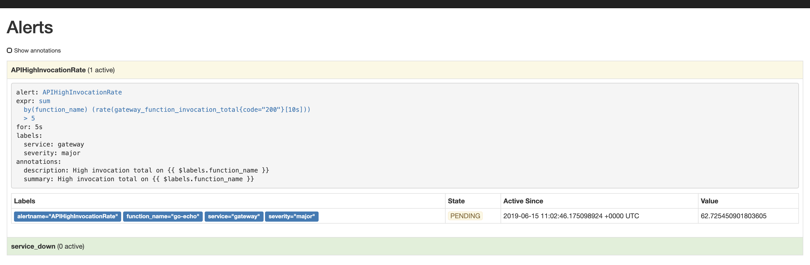
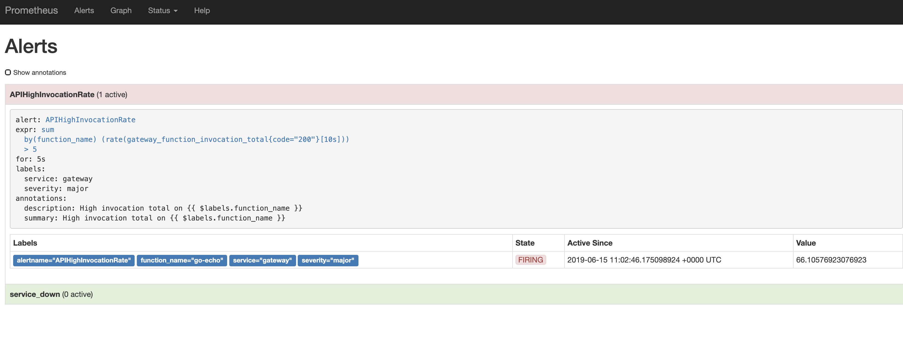
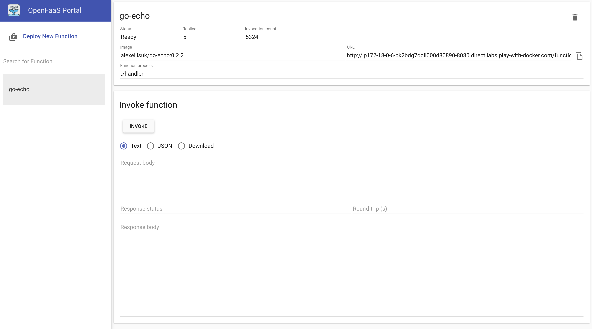

Auto-Scaling in OpenFaas
In this post, what I am focusing on is auto-scaling in OpenFaas, which allows a function to scale up or down depending on demand represented by different metrics.
But, before taking about auto-scaling, let’s start with the design and architecture of OpenFaas.
Design
Here I present the conceptual architecture of OpenFaas. However, the orchestration provider I use is Swarm rather than Kubernetes. According to the image, my OpenFaas consists of four parts: Gateway, Watchdog, Prometheus and Swarm and I will make an introdution for them below.

Gateway
Gateway provides an external route into your functions and collects Cloud Native metrics through Prometheus. In a word, the Gateway, is just a door for user to access to the api function and provide matrics for Prometheus.

In addition, it offer a build-in UI portal for user to deploy function either by you own or from the Function Store. What’s more, the connection between Gateway and Prometheus is the key to make auto-scaling, which means that can make auto-scaling via AlertManager and Prometheus.
WatchDog
According to the official document, the watchdog provides an unmanaged and generic interface between the outside world and your function. Its job is to marshal a HTTP request accepted on the API Gateway and to invoke your chosen application. The diagram below indicates how Watchdog works as a web server.

You can consider Watchdog as a entry for your fuction that is deloyed in docker.
Prometheus
Prometheus is an open-source systems monitoring and alerting toolkit originally built at SoundCloud. In OpenFaas, Prometheus help Gateway collect Cloud Native metrics and fire an alert to the API Gateway to inform Gateway to scale.

Swarm
A swarm is a group of machines that are running Docker and joined into a cluster. In OpenFass, swarm is used to create cluster in which you can easily to set up your docker function in a short period of time. Read Swarm for more details.

How OpenFaas Scale
The gateway will scale functions according to demand by altering the service replica count in the Docker Swarm or Kubernetes API. Custom alerts generated by AlertManager are received on the /system/alertendpoint.
Let’s figure out the mechanism why OpenFaas can make auto-scaling.
First, in auto-scaling, prometheus plays a important role. Check the config of prometheus first.
alert.rules.yml
1 | groups: |
In the yml file, we can know that there is an alert named APIHighInvocationRate, which will sent a file alert to API Gateway when sum(rate(gateway_function_invocation_total{code="200"}[10s])) BY (function_name) > 5(whether a function was called for at least 5 times in last 10 seconds). But only the alert lasts for 5s, can Gateway scale the function.
Continuing to focus on the config of alertmanager.
alertmanager.yml
1 | route: |
Yep! We find the reason why OpenFaas can auto scale the function. Prometheus will check the number each function calls intermittently. When it find that APIHighInvocationRate appear and last for 5s, it will alert and send a command to http://gateway:8080/system/alert to scale up.
Curiously, I trun to the system/alert api interface and show the core code below. You can get more detail in alerthandler.
1 | // MakeAlertHandler handles alerts from Prometheus Alertmanager |
In the api, Gateway will get the information from AlertManager, decide what replica count to set and scale.
Monitor Auto-scaling in Open-Faas UI
We will use play_with_docker to implement the tutorial.
First, deploy the echo-fn function in OpenFaas and set the scale-config.
1 | git clone https://github.com/alexellis/echo-fn \ |
Then, you can get a function echo-fn in OpenFaas UI.

Get into the alerts UI portal in 192.168.0.12:9090/alerts. However, there is no alert now.

Use shell command to invoke the go-echo function over and over until seeing the replica count scale.
1 | for i in {0..10000}; |
After run the command and go-echo is invoked again and again, AlertManager will find that sum(rate(gateway_function_invocation_total{code="200"}[10s])) BY (function_name) > 5 becomes True. Than it will be in PENDING state and continue to monitor the alert for 5s.

If the alert lasts for 5s, AlertManager will switch to FIRING state and sent to /system/alert endpoint to scale the function.

After a few second, you can find the replica number wil be scaled to 5.

When you stop the command, Gateway will figure out that some replica get to be idle and kill them. After that, the replica number will down back to 1.


评论加载中